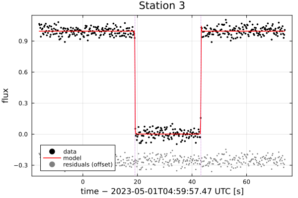
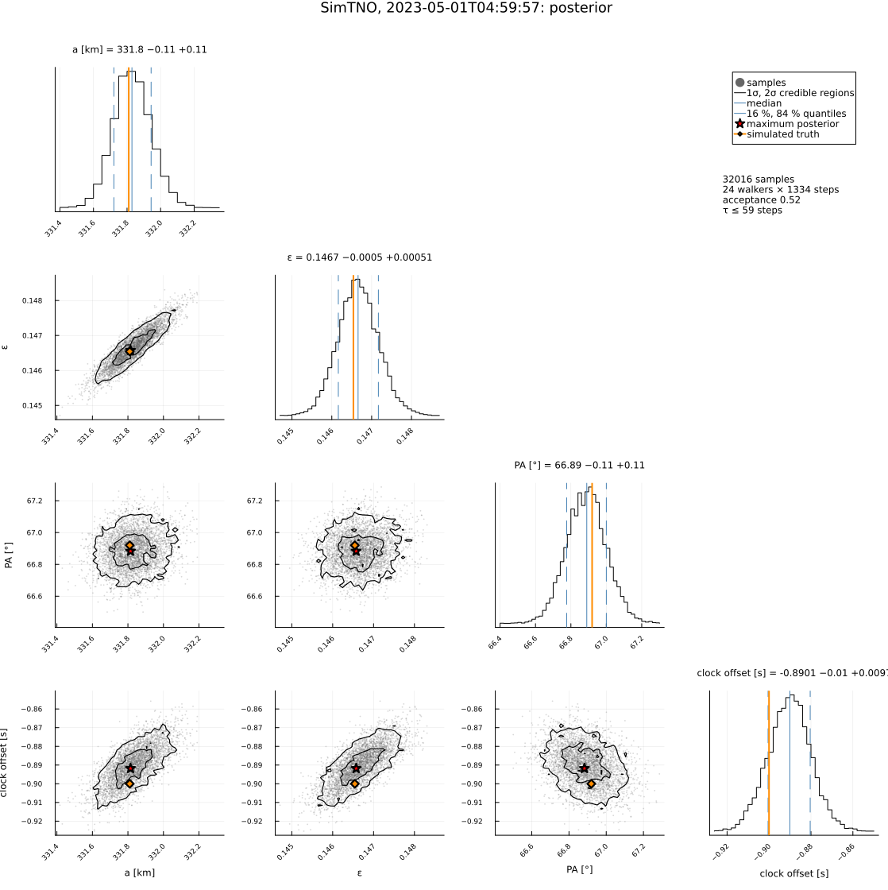
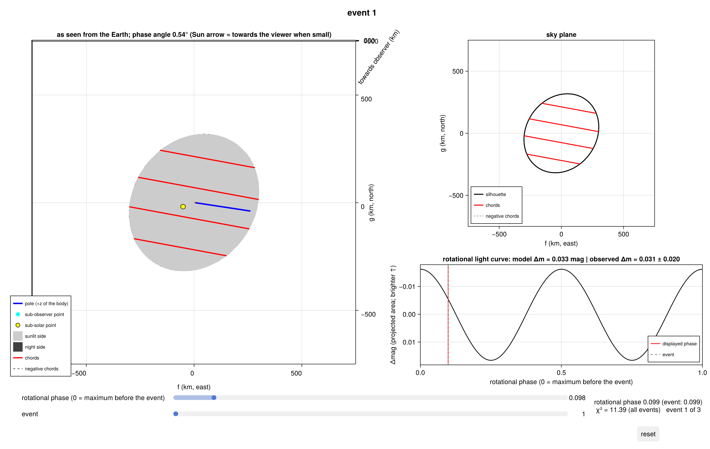
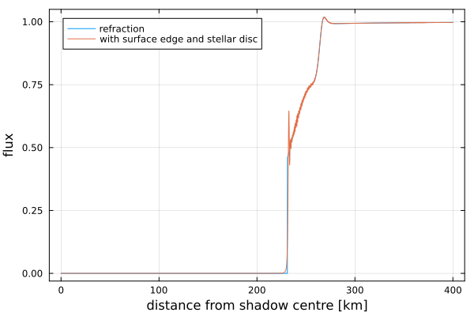
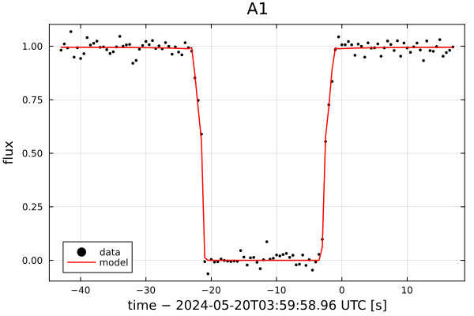

Tutorial: an offline tour with synthetic data
A tour of the package on simulated data. It needs no network and no data files, and prints the expected results next to the fitted ones:
- light curves → timings (diffraction model) → chords;
- a limb fit (2-D ellipse) with negative chords and a clock offset; uncertainties by covariance, χ² profile and Bayesian posterior; astrometry; a joint fit of the light curves;
- a published ellipse checked against the negative chords;
- three events of a rotating triaxial body: a 3-D ellipsoid fit with a rotational-amplitude constraint, and the same with a triangle mesh (OBJ);
- an atmosphere (2002 XV93-like): a joint fit of the light curves for the surface pressure;
- maps (GeoMakie).
Run it with:
julia --project=. examples/tutorial.jl [output_dir] (default: examples/output/tutorial)The code is not run when the manual is built. The output after each section is that of the last run of examples/tutorial.jl, stored in examples/output/tutorial/output.txt.
using Occultations, Random, Printf, LinearAlgebra
using Plots
import CairoMakie # saves the GeoMakie maps (Makie figures)
include(joinpath(@__DIR__, "standard_figures.jl"))
include(joinpath(@__DIR__, "sim_stations.jl")) # stations on land, in the dark, with their equipment
out = length(ARGS) >= 1 ? ARGS[1] : mkpath(joinpath(@__DIR__, "output", "tutorial"))
rng = MersenneTwister(42)1. light curves → timings → chords
eph = EphemKeplerian(a=43.0, e=0.05, i=12.0, Ω=80.0, ω=150.0, M=10.0, epoch=Epoch("2023-01-01"), name="SimTNO")
body = Body("SimTNO", eph; radius=300.0, pole=(30.0, 10.0), rotation_period=7.0, W0=40.0,
shape=Ellipsoid(340.0, 290.0, 250.0))
t0 = Epoch("2023-05-01T05:00:00")
ra, dec, _ = ephem_radec(body, t0)
star = Star(ra + 0.002 / 3600 / cosd(dec), dec; name="SimStar", mag=Dict("V" => 14.0, "K" => 12.5),
ra_err=0.15, dec_err=0.12)
ev = Event(star, body, t0; name="SimTNO") # simulated: no date in the plots
display(ev)
path = shadow_path(star, body, ev.tref, ev.tref; offsets=[0.0])
lon0, lat0 = path.lon[1, 1], path.lat[1, 1]
truth = project(body, ev.tref) # the true apparent limb
center = (25.0, -12.0) # ephemeris offset [km]
println("true limb: ", truth, ", centre ", center)Seven stations at random offsets across the path (km from the body's centre), in central South America, spread along the track by up to ±15 s, each with its own camera (examples/sim_stations.jl). The second station that sees the occultation has a clock 0.9 s late:
pv = positionv(star, eph, GEOCENTER, ev.tref)
n̂ = (-pv.vg, pv.vf) ./ hypot(pv.vf, pv.vg) # cross-track unit vector
offsets = random_offsets(MersenneTwister(7), 7, -400.0, 400.0; mingap=20.0)
sites = stations(star, body, ev.tref, offsets .+ (center[1] * n̂[1] + center[2] * n̂[2]); rng=rng, spread=30.0,
prefix="Station ", equipment=EQUIPMENT[1:3])
npos, clocked = 0, ""
for (j, st) in enumerate(sites)
obs = st.observer
_, _, texp, noise = st.equipment
t = collect(round(st.τ) - 45:texp:round(st.τ) + 45)
pc = predicted_contacts(ev, obs, truth; center=center)
if isempty(pc)
lc = LightCurve(t, 1 .+ noise .* randn(rng, length(t)); tref=ev.tref, σ=noise, exptime=texp, name=obs.name)
push!(ev, Chord(obs.name, obs, lc))
continue
end
ti, te = pc[1][1] - ev.tref, pc[1][2] - ev.tref
global npos += 1
if npos == 2 # this station's clock is 0.9 s late
ti, te = ti + 0.9, te + 0.9
global clocked = obs.name
end
v = hypot(velocity(Track(star, body, obs, ev.tref, -60, 60), ti)...)
lc = simulate_lightcurve(t, ti, te; tref=ev.tref, vel=v, dist=ev.ca.dist_km,
star_diam=apparent_diameter(star, ev.ca.dist_km), σ=noise, exptime=texp, rng=rng,
name=obs.name)
tf = fit_timing(lc; vel=v, dist=ev.ca.dist_km, star_diam=apparent_diameter(star, ev.ca.dist_km), rng=rng)
c = contact_times(tf)
@printf("%-10s immersion %s ± %.3f s emersion %s ± %.3f s\n", obs.name, isot(c.immersion; digits=3),
c.immersion_err, isot(c.emersion; digits=3), c.emersion_err)
npos == 1 && savefig(plot(tf; xguide="time [s]"), joinpath(out, "timing_fit.png"))
push!(ev, Chord(obs.name, obs, tf))
endEvent SimTNO: SimTNO occults Star(SimStar, RA=16 04 37.2259, Dec=-16 51 18.739)
closest approach 2023-05-01T04:59:57.472: 0.0004" (10.7 km), PA 190.64°, 22.532 km/s, distance 39.9567 au
true limb: EllipseOutline(a = 331.810 km, b = 283.186 km, PA(minor) = 66.92°), centre (25.0, -12.0)
Station 2 immersion 2023-05-01T05:00:07.065 ± 0.006 s emersion 2023-05-01T05:00:26.603 ± 0.008 s
Station 3 immersion 2023-05-01T05:00:15.848 ± 0.006 s emersion 2023-05-01T05:00:41.373 ± 0.010 s
Station 4 immersion 2023-05-01T05:00:06.024 ± 0.008 s emersion 2023-05-01T05:00:30.916 ± 0.007 s
Station 5 immersion 2023-05-01T05:00:02.459 ± 0.006 s emersion 2023-05-01T05:00:26.757 ± 0.011 s
Station 6 immersion 2023-05-01T05:00:10.905 ± 0.004 s emersion 2023-05-01T05:00:32.426 ± 0.005 s2. limb fit: ellipse, negative chords, clock offset, uncertainties
println("clock 0.9 s late: ", clocked)
fitE = fit_limb(ev; fit_dt=[clocked], rng=rng)
display(fitE)
println("\ncontact residuals [s]: ", [round(r.dt; digits=4) for r in contact_residuals(fitE)])
println("clock offsets: ", clock_offsets(fitE))
println("χ² profile 1σ interval of the equatorial radius: ", confidence_interval(fitE, :equatorial_radius))
a = astrometry(fitE)
@printf("astrometry: RA %s Dec %s (σ %.3f, %.3f mas) offsets %+.3f, %+.3f mas\n", a.ra_str, a.dec_str,
a.ra_err, a.dec_err, a.offset_ra, a.offset_dec)
post = sample(fitE; nsteps=2000, rng=rng)
display(post)
println("derived (posterior): ", derived_summary(post))
println("autocorrelation times [steps]: ", round.(autocorrelation_time(post); digits=1))
savefig(cornerplot(post; vars=[:equatorial_radius, :oblateness, :position_angle, Symbol("dt_", clocked)],
axislabels=Dict(:equatorial_radius => "a [km]", :oblateness => "ε", :position_angle => "PA [°]",
Symbol("dt_", clocked) => "clock offset [s]"),
truths=Dict(:equatorial_radius => truth.a, :oblateness => 1 - truth.b / truth.a,
:position_angle => truth.pa, Symbol("dt_", clocked) => -0.9), truth_label="simulated truth"),
joinpath(out, "corner.png"))A joint photometric fit: the light curves themselves against the limb.
fitP = fit_limb(ev; photometry=true, fit_dt=[clocked], rng=rng, starts=3)
println("\njoint photometric fit: χ²/dof = ", round(reduced_chi2(fitP); digits=3),
", a = ", fitP[:equatorial_radius], ", ε = ", fitP[:oblateness])clock 0.9 s late: Station 3
LimbProblem fit: χ² = 3.919, dof = 4, χ²/dof = 0.980
center_f = 24.953441 ± 0.056547
center_g = -12.131407 ± 0.109339
equatorial_radius = 331.622409 ± 0.193944
oblateness = 0.145894 ± 0.000561
position_angle = 66.771011 ± 0.172406
dt_Station 3 = -0.899480 ± 0.005833
derived:
offset_ra = 0.861075 ± 0.001951
offset_dec = -0.418622 ± 0.003773
equivalent_radius = 306.478382 ± 0.089670
semi_minor_axis = 283.240807 ± 0.059770
contact residuals [s]: [0.0, -0.0001, -0.0016, 0.0046, 0.0002, -0.0075, 0.0032, 0.0164, -0.0006, -0.0007]
clock offsets: Dict("Station 3" => (-0.899480361244788, 0.005832674857811032))
χ² profile 1σ interval of the equatorial radius: (331.42910265167825, 331.8169895497464)
astrometry: RA 16 04 37.22594 Dec -16 51 18.7403 (σ 0.150, 0.120 mas) offsets +0.861, -0.419 mas
Posterior of LimbProblem: 24 walkers × 2000 steps (burn-in 666), acceptance 0.52
center_f = 24.953202 -0.052574 +0.054724
center_g = -12.123134 -0.108314 +0.107378
equatorial_radius = 331.635776 -0.206284 +0.203631
oblateness = 0.145912 -0.000587 +0.000611
position_angle = 66.780292 -0.180654 +0.182464
dt_Station 3 = -0.899317 -0.005534 +0.005722
derived (posterior): (offset_ra = (median = 0.8611063159238858, minus = 0.0018361405609692572, plus = 0.0018925504623027445), offset_dec = (median = -0.41840495117054055, minus = 0.0038647923203068424, plus = 0.003773295810312771), equivalent_radius = (median = 306.483008693176, minus = 0.09416452497941918, plus = 0.09693143875051646), semi_minor_axis = (median = 283.2440051952935, minus = 0.06608056128345652, plus = 0.06350845763842017))
autocorrelation times [steps]: [54.6, 51.4, 46.5, 47.2, 54.3, 51.8]
joint photometric fit: χ²/dof = 0.995, a = (331.404891646818, 0.18751887777710954), ε = (0.1454898415396204, 0.000551953797635877)3. a published ellipse against the negative chords
lit = ellipse_outline(; equatorial_radius=385.0, oblateness=0.15, position_angle=67.0) # the truth, 16 % larger
for r in check_negative_chords(ev, lit; center=(fitE[:center_f][1], fitE[:center_g][1]))
@printf("%-10s %s min distance %7.2f km%s\n", r.chord, r.conflict ? "CONFLICT" : "ok ", r.distance,
r.conflict ? @sprintf(" (would have seen %.2f s)", r.duration) : "")
endStation 1 CONFLICT min distance -48.80 km (would have seen 14.74 s)
Station 7 CONFLICT min distance -13.57 km (would have seen 7.97 s)4. three events of a rotating triaxial body: 3-D ellipsoid and mesh
evs = Event[]
# the same hour on three nights (P = 7 h): rotational phases 0, 0.43 and 0.86
for (k, dt) in enumerate([0.0, 1.0, 2.0] .* 86400)
tk = t0 + dt
rak, deck, _ = ephem_radec(body, tk)
st = Star(rak + 0.001 / 3600 / cosd(deck), deck; name="star $k")
e = Event(st, body, tk; name="event $k")
Ok = project(body, e.tref)
ck = (5.0k, -3.0k)
pk = positionv(st, eph, GEOCENTER, e.tref)
nk = (-pk.vg, pk.vf) ./ hypot(pk.vf, pk.vg)
offs = random_offsets(MersenneTwister(10 + k), 5, -280.0, 280.0; mingap=20.0)
for s in stations(st, body, e.tref, offs .+ (ck[1] * nk[1] + ck[2] * nk[2]); rng=rng, prefix="E$k-S")
o = s.observer
pc = predicted_contacts(e, o, Ok; center=ck)
isempty(pc) && continue
push!(e, Chord(o.name, o; immersion=pc[1][1] + 0.03randn(rng), emersion=pc[1][2] + 0.03randn(rng),
immersion_err=0.03, emersion_err=0.03))
end
push!(evs, e)
end
u = normalize(geocentric_vector(eph, t0 + 30 * 86400))
amp = RotationalAmplitude(t0 + 30 * 86400, rotational_amplitude(340.0, 290.0, 250.0, aspect_angle(30.0, 10.0, u)), 0.02)
body.shape = Ellipsoid(310.0, 300.0, 280.0) # deliberately poor starting shape
fit3 = fit(LimbProblem(evs; model=EllipsoidLimb(), amplitudes=[amp], fix=[:pole_ra, :pole_dec]); rng=rng)
display(fit3)
println("(true axes 340, 290, 250 km)")
write_obj(joinpath(out, "simtno_fitted_ellipsoid.obj"),
ellipsoid_mesh(fit3[:a][1], fit3[:b][1], fit3[:c][1]; name="SimTNO fitted ellipsoid"))
for k in 1:3
savefig(plot(fit3; event=k), joinpath(out, "ellipsoid_event$k.png"))
endThe 3-D view of each event. With GLMakie, the event, the rotational phase and (with explore=true) the pole, W0 and the axes are sliders, with the live χ²:
for k in 1:3
CairoMakie.save(joinpath(out, "ellipsoid_occview_event$k.png"), occview(fit3; event=k))
endThe same body as a triangle mesh, written to and read from an OBJ file:
objfile = joinpath(out, "simtno.obj")
write_obj(objfile, ellipsoid_mesh(340.0, 290.0, 250.0; subdivisions=4))
mesh = read_obj(objfile)
fitM = fit_limb(evs; model=MeshLimb(mesh; fit_orientation=true), fix=[:pole_ra, :pole_dec], rng=rng, starts=4)
println("\nmesh fit: scale = ", fitM[:scale], ", W0 = ", fitM[:W0], ", volume-equivalent radius = ",
fitM[:volume_equivalent_radius])LimbProblem fit: χ² = 14.673, dof = 21, χ²/dof = 0.699
center_f_1 = 4.800424 ± 0.217635
center_g_1 = -2.677225 ± 0.284395
center_f_2 = 9.750864 ± 0.220633
center_g_2 = -5.949861 ± 0.188569
center_f_3 = 14.600271 ± 0.263838
center_g_3 = -8.972041 ± 0.249989
a = 340.045706 ± 0.407336
b = 289.951436 ± 0.238814
c = 249.996612 ± 1.871754
pole_ra = 30.000000 (fixed)
pole_dec = 10.000000 (fixed)
W0 = 169.731281 ± 0.225667
period = 7.000000 (fixed)
derived:
offset_ra_1 = 0.165650 ± 0.007510
offset_dec_1 = -0.092384 ± 0.009814
offset_ra_2 = 0.336530 ± 0.007615
offset_dec_2 = -0.205347 ± 0.006508
offset_ra_3 = 0.503975 ± 0.009107
offset_dec_3 = -0.309699 ± 0.008629
volume_equivalent_radius = 291.026293 ± 0.574098
b_over_a = 0.852684 ± 0.000900
c_over_b = 0.862202 ± 0.006971
apparent_a_1 = 331.921010 ± 0.253840
apparent_b_1 = 283.114714 ± 0.214342
apparent_pa_1 = 67.083244 ± 0.195391
aspect_1 = 148.971826 ± 0.000000
rotation_phase_1 = 244.894682 ± 0.225667
apparent_a_2 = 322.795465 ± 0.165974
apparent_b_2 = 287.561484 ± 0.171024
apparent_pa_2 = 41.295573 ± 0.275134
aspect_2 = 148.990556 ± 0.000000
rotation_phase_2 = 39.226669 ± 0.225667
apparent_a_3 = 318.720240 ± 0.192628
apparent_b_3 = 289.915261 ± 0.234418
apparent_pa_3 = 4.735022 ± 0.382900
aspect_3 = 149.009442 ± 0.000000
rotation_phase_3 = 193.556701 ± 0.225667
(true axes 340, 290, 250 km)
mesh fit: scale = (1.000583402279999, 0.0003188379514820869), W0 = (349.7718496081526, 0.17607977071050857), volume-equivalent radius = (290.99070628732676, 0.09272478485544491)5. atmosphere (2002 XV93-like, Arimatsu et al. 2026)
ephA = EphemKeplerian(a=37.5, e=0.02, i=12.0, Ω=80.0, ω=150.0, M=10.0, epoch=Epoch("2024-01-01"), name="XV93-like")
bodyA = Body("XV93-like", ephA; radius=244.0, density=1500.0)
tA = Epoch("2024-05-20T04:00:00")
raA, decA, _ = ephem_radec(bodyA, tA)
starA = Star(raA + 0.001 / 3600 / cosd(decA), decA; name="StarA", diameter=0.0032)
evA = Event(starA, bodyA, tA; name="XV93-like")
# a central chord, one halfway to the limb and a near miss through the atmosphere
pvA = positionv(starA, ephA, GEOCENTER, evA.tref)
nA = (-pvA.vg, pvA.vf) ./ hypot(pvA.vf, pvA.vg)
for (j, s) in enumerate(stations(starA, bodyA, evA.tref, [20.0, 110.0, 250.0] .+ (15.0 * nA[1] - 20.0 * nA[2]); rng=rng,
prefix="A"))
tt = collect(round(s.τ) - 30:0.5:round(s.τ) + 30)
push!(evA, Chord("A$j", s.observer,
LightCurve(tt, ones(length(tt)); tref=evA.tref, σ=0.03, exptime=0.5, λ=0.6, name="A$j")))
end
atm = xv93_atmosphere(:CH4)
sim = LimbProblem(evA; model=CircleLimb(), photometry=true, atmosphere=atm,
init=Dict(:center_f => 15.0, :center_g => -20.0, :radius => 244.0, :pressure => 124.0))
v = [q.value for q in parameters(sim)]
rngA = MersenneTwister(3)
for d in sim.photometry # synthetic light curves from the model
I, _ = Occultations._phot_model(sim, d, Occultations._outlines(sim, v)[1], v)
d.lc.flux .= I .+ 0.03 .* randn(rngA, length(I))
end
airless = fit(LimbProblem(evA; model=CircleLimb(), photometry=true,
init=Dict(:center_f => 0.0, :center_g => 0.0, :radius => 230.0)); starts=3, rng=rng)
fitA = fit(LimbProblem(evA; model=CircleLimb(), photometry=true, atmosphere=atm,
init=Dict(:center_f => airless[:center_f][1], :center_g => airless[:center_g][1],
:radius => airless[:radius][1], :pressure => 50.0)); starts=6, rng=rng)
display(fitA)
χtruth = sum(abs2, residuals(fitA.problem, [15.0, -20.0, 244.0, 124.0]))
@printf("airless model: χ² = %.1f; with atmosphere: χ² = %.1f (at the simulated truth, 124 nbar and R = 244 km: %.1f)\n",
airless.chi2, fitA.chi2, χtruth)
prof = atmosphere_profile(atm, fitA[:pressure][1], fitA[:radius][1], body_gm(bodyA), evA.ca.dist_km;
λ=0.6, star_diam=apparent_diameter(starA, evA.ca.dist_km))
savefig(plot(prof; ρmax=400), joinpath(out, "atmosphere_profile.png"))
lc1 = evA["A1"].lightcurve
savefig(plot(lc1; model=model_lightcurve(fitA, "A1")[2], xguide="time [s]"), joinpath(out, "atmosphere_lightcurve.png"))LimbProblem fit: χ² = 354.012, dof = 353, χ²/dof = 1.003
center_f = 14.841635 ± 0.181806
center_g = -20.889610 ± 0.339327
radius = 244.185100 ± 0.348384
pressure = 125.413665 ± 2.651093
derived:
offset_ra = 0.572336 ± 0.007011
offset_dec = -0.805563 ± 0.013085
airless model: χ² = 1737.8; with atmosphere: χ² = 354.0 (at the simulated truth, 124 nbar and R = 244 km: 355.7)6. maps
# the standard figures: limb fits (default, 68.3 % region, as the paper), posterior, maps (prediction,
# post-fit, comparison) and the globe
standard_figures("simtno", fitE; out=out, posterior=post,
projection="+proj=laea +lon_0=$(round(lon0)) +lat_0=$(round(lat0))", limits=(lon0 - 30, lon0 + 30, lat0 - 20, lat0 + 20), window=600, marks=0)
println("\nfigures written to ", out)The timing fit of station 3, and the posterior of the ellipse and the clock offset with the simulated truth:


The fitted 3-D ellipsoid in the geometry of the first event:

The refracted flux of the fitted atmosphere, and a light curve with the model:

